Luxo é se sentir bem todos os dias.
AGENDE PELO WHATSAPP
Atende a revisão 1 (P1.1 e P2.5): preto, off-white e dourado, sem roxo e sem lilás, e tipografia que nenhum cliente da Kalenza usa. Os SVGs já saem com o texto em curvas. Escolha uma rota; a outra é descartada e o site v2 é montado em cima da escolhida.
CMYK aproximado por conversão simples; validar em prova impressa.
| Texto | Fundo | Contraste |
|---|---|---|
| Off-white | Preto quente | 17,5 : 1 |
| Ouro claro | Preto quente | 11,0 : 1 |
| Ouro | Preto quente | 6,9 : 1 |
| Preto quente | Off-white / areia | 17,5 : 1 / 15,0 : 1 |
| Cinza-texto | Off-white / areia | 6,4 : 1 / 5,4 : 1 |
| Preto quente | Ouro (botão no hover) | 6,9 : 1 |
| Ouro | Off-white | 2,5 : 1 (só filete, nunca texto) |
ROTA 1
Alto contraste, caixa-alta espaçada e um selo redondo com anel duplo de ouro. Tom de revista e de clínica premium. Tipografia: Bodoni Moda (títulos) e Hanken Grotesk (texto).
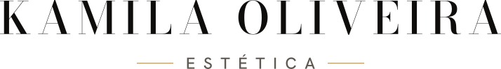
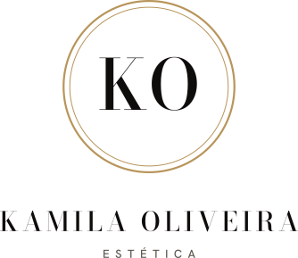
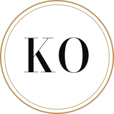
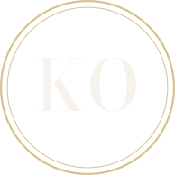
Post 1080×1350. Frase da própria Kamila, a confirmar.
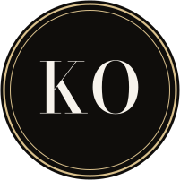
Avatar em 96, 48 e 32 px.
Depilação a laser, limpeza de pele e estética corporal na Pampulha, BH.
Agendar pelo WhatsAppTopo do site. Texto provisório.
ROTA 2
Nome em caixa mista, mais próximo e feminino, com filete de ouro e um losango. O selo é um quadrado de cantos cortados, sem arco e sem círculo. Tipografia: Gilda Display (títulos) e Schibsted Grotesk (texto).
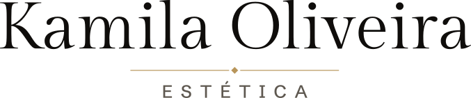
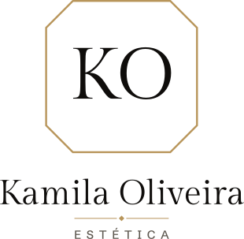
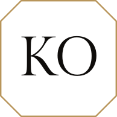
Post 1080×1350. Frase da própria Kamila, a confirmar.
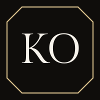
Avatar em 96, 48 e 32 px.
Depilação a laser, limpeza de pele e estética corporal na Pampulha, BH.
Agendar pelo WhatsAppTopo do site. Texto provisório.
| Rota 1 · Editorial | Rota 2 · Assinatura | |
|---|---|---|
| Sensação | Prestígio, revista, clínica premium | Próxima, feminina, assinada à mão |
| Fit com 🖤🤍✨ | Alto: selo redondo e dourado sobre preto | Alto, com o dourado em filete |
| Logo em 32 px | KO dentro do anel; legível | KO no octógono; legível |
| Risco | Caixa-alta espaçada é comum em estética de luxo | Gilda Display tem contraste menor e pode parecer mais clássica |
| Combina com "luxo acessível" | Mais luxo que acessível | Mais equilíbrio entre os dois |
Minha leitura: a Rota 2 equilibra melhor "luxo acessível" e se distingue de outras clínicas de caixa-alta; a Rota 1 passa mais prestígio. Fonte e filete já são inéditos nos clientes da Kalenza nas duas.